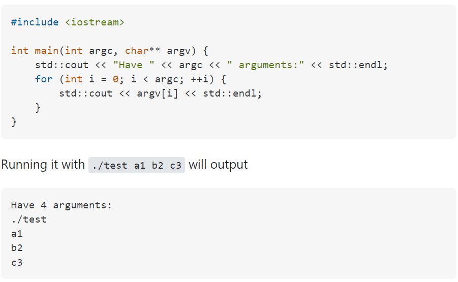

argv and argc are how command line arguments are passed to main() in C and C++.
argc will be the number of strings pointed to by argv. This will (in practice) be 1 plus the number of arguments, as virtually all implementations will prepend the name of the program to the array.
The variables are named argc (argument count) and argv (argument vector) by convention, but they can be given any valid identifier: int main(int num_args, char** arg_strings) is equally valid.
They can also be omitted entirely, yielding int main(), if you do not intend to process command line arguments.
Try the following program:
